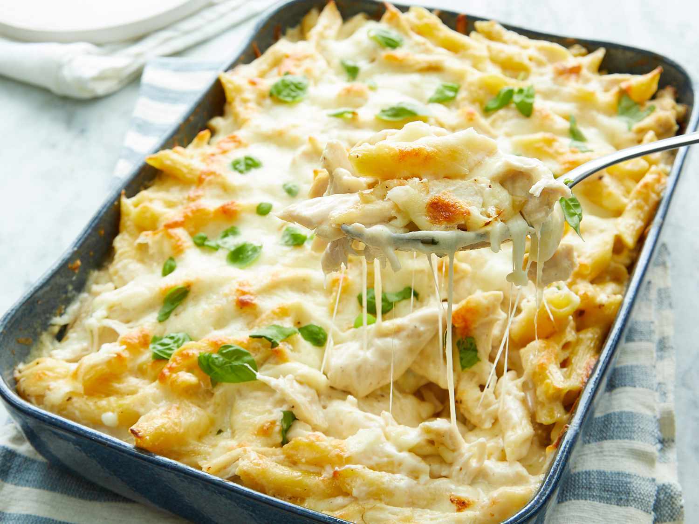

Chicken Alfredo Pasta Bake

Description
Chicken Alfredo Pasta Bake is a creamy and comforting dish that brings together tender pasta, rich Alfredo
sauce, juicy chicken, and melted cheese. This baked version of the classic Alfredo pasta adds a golden,
bubbly layer of cheese on top, making it a perfect dish for family dinners or gatherings.
With a combination of garlic-infused cream sauce, Parmesan cheese, and a perfectly baked finish, this dish
is indulgent yet simple to prepare. Serve it with a side of garlic bread and a crisp salad for a complete
and satisfying meal.
Ingredients
- Alfredo Sauce
- 2 tbsp butter
- 2 cloves garlic, minced
- 1 1/2 cups heavy cream
- 1 cup grated Parmesan cheese
- 1/2 tsp salt
- 1/2 tsp black pepper
- 1/2 tsp Italian seasoning
- Chicken and Pasta
- 2 cups cooked and shredded chicken
- 12 oz penne pasta, cooked
- 1 tbsp olive oil
- Cheese Topping
- 2 cups shredded mozzarella cheese
- 1/2 cup grated Parmesan cheese
- 1 tbsp chopped fresh parsley
Assembly and Steps
- Prepare the Alfredo Sauce:
- Melt butter in a skillet over medium heat.
- Add minced garlic and sauté until fragrant.
- Pour in heavy cream and bring to a gentle simmer.
- Stir in Parmesan cheese, salt, pepper, and Italian seasoning.
- Simmer for 5 minutes, stirring until smooth.
- Prepare the Pasta and Chicken:
- Cook penne pasta according to package instructions; drain and set aside.
- In a pan, heat olive oil and lightly sauté the cooked shredded chicken.
- Assemble the Pasta Bake:
- In a baking dish, combine the pasta, chicken, and Alfredo sauce.
- Mix well to coat everything evenly.
- Sprinkle shredded mozzarella and Parmesan cheese on top.
- Bake the Dish:
- Cover with foil and bake at 375°F (190°C) for 20 minutes.
- Remove foil and bake another 10 minutes until cheese is bubbly and golden.
- Garnish with fresh parsley and let it cool before serving.
Home